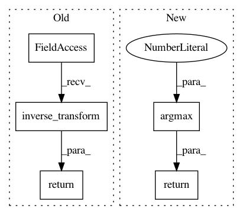

d01d7d2f961c58e40135627dad07ccae7de65614,autokeras/text/text_supervised.py,TextClassifier,inverse_transform_y,#TextClassifier#Any#,84
Before Change
return y_train
def inverse_transform_y(self, output):
return self.y_encoder.inverse_transform(output)
def get_n_output_node(self):
return self.y_encoder.n_classes
After Change
pass
def inverse_transform_y(self, output):
return np.argmax(output, axis=1)
In pattern: SUPERPATTERN
Frequency: 3
Non-data size: 5
Instances
Project Name: keras-team/autokeras
Commit Name: d01d7d2f961c58e40135627dad07ccae7de65614
Time: 2019-02-22
Author: satyakesav123@gmail.com
File Name: autokeras/text/text_supervised.py
Class Name: TextClassifier
Method Name: inverse_transform_y
Project Name: rtavenar/tslearn
Commit Name: 85aabb5014e22659ac722280607a1f4b44e1fb32
Time: 2020-05-03
Author: romain.tavenard@univ-rennes2.fr
File Name: tslearn/shapelets.py
Class Name: ShapeletModel
Method Name: predict